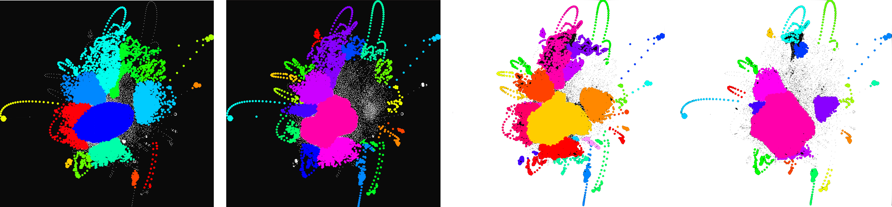
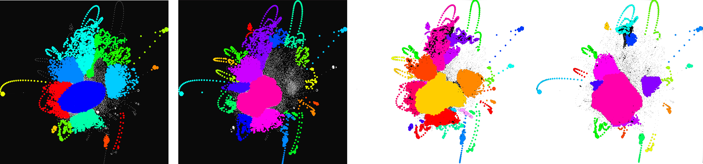

Cerebro, formerly known as "The Brain", reveals clusters of source code that co-execute to produce behavioral features of the program throughout and within executions. We created a clustered visualization of source-code that is informed by dynamic control flow of multiple executions; each cluster represents commonly interacting logic that composes software features. In addition, we render individual executions atop the clustered multiple-execution visualization as user-controlled animations to reveal characteristics of specific executions—these animations may provide exemplars for the clustered features and provide chronology for those behavioral features, or they may reveal anomalous behaviors that do not fit with the overall operational profile of most executions. Both the clustered multiple-execution view and the animated individual-execution view provide insights for the constituent behaviors within executions that compose behaviors of whole executions. Inspired by neural imaging of human brains of people who were subjected to various external stimuli, we designed and implemented Cerebro to reveal program activity during execution. The result has revealed the principal behaviors of execution. Those behaviors were revealed to be (in some cases) cohesive, modular source-code structures and (in other cases) cross-cutting, emergent behaviors involving multiple modules.
Gallery
NanoXML
JPacMac
JavaC
 

Also: check out some of my recent experiments with projecting force directed graphs in three-dimensional spaces: Graph Scope: http://graphscope.glitch.me/